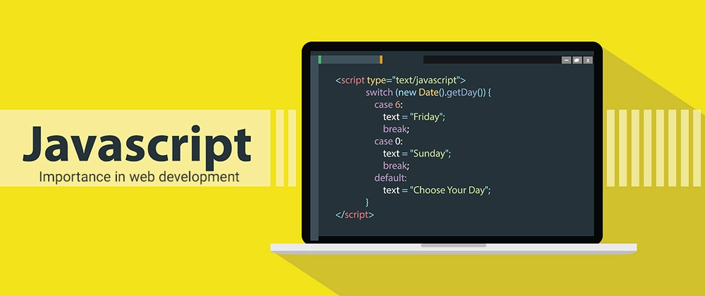

Student Name: Shorouk Mostafa Mohamed
Student ID: 2500421
Section: 81
JavaScript is a programming language created in 1995 by Brendan Eich. It is used to make websites interactive and dynamic. JavaScript works with HTML and CSS to create modern web pages.
JavaScript includes important programming concepts such as variables, data types, conditions, loops, functions, arrays, and objects.
JavaScript uses the Document Object Model (DOM) to access and change HTML elements. Events and event listeners allow websites to respond to user actions such as clicks and typing.
| Example | Function |
|---|---|
| Click Counter | Counts the number of button clicks. |
| Dark Mode | Changes the website appearance. |
| To-Do List | Helps users organize their tasks. |
| Form Validation | Checks information entered by users. |
Advanced JavaScript concepts include asynchronous programming, JSON, error handling, browser developer tools, and localStorage. These features help developers build more powerful web applications.
JavaScript is an essential language in web development. It makes websites more interactive and improves the user experience.